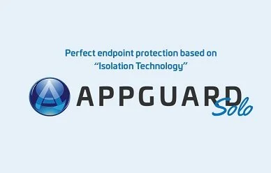

Govern to Recover. One partner, end to end.
Apex is an IT and cybersecurity firm that covers the whole framework, from compliance readiness and 24/7 managed detection to network builds, physical security and workforce training.
UK office: 52 High Street, Sevenoaks, Kent, TN13 1JG
GV Govern
Set the strategy, policy and oversight every other function answers to.
- GV.POCompliance readiness for NIST, ISO 27001, HIPAA and CMMC
- GV.RMRisk advisory: objectives, measures and defensive strategy
- GV.OVGovernance, risk and compliance oversight led by a Chief GRC Officer
ID Identify
Know your assets, your risks and exactly where you stand today.
- ID.RASecurity risk assessments across infrastructure, policy and user behaviour
- ID.RAVulnerability and threat analysis to find weaknesses and compliance gaps
- ID.RAVulnerability management: misconfigurations and exposed credentials
- ID.IMSecurity architecture review for network, cloud and endpoints
PR Protect
Safeguard endpoints, networks, doors and the people who use them.
- PR.PSNext-gen endpoint prevention that blocks known and new attacks
- PR.IRFirewall, SD-WAN, SASE and software-defined networking
- PR.AAKey card, fob, mobile and keypad door access control
- PR.PSSecure DevOps and software development on Azure and AWS
- PR.ATSecurity awareness workshops and the Apex Institute
DE Detect
Watch everything, around the clock, and find attacks early.
- DE.CM24/7 Managed Detection and Response from a cloud-powered virtual SOC
- DE.CMContinuous endpoint monitoring, recording and centralising of activity
- DE.AEReal-time alerting and triage of critical events
- DE.CMEnterprise security cameras with cloud video management
- DE.CMSolar-powered mobile surveillance trailers, for rent or purchase
RS Respond
Contain incidents fast, with clear guidance on what to do next.
- RS.MIHost isolation that stops lateral spread on your behalf
- RS.MARapid containment with detailed remediation guidance
- RS.ANActive threat hunting and root cause determination
- RS.MAIncident response planning and tabletop exercises
RC Recover
Restore operations and come back with stronger defences.
- RC.RPResponse and recovery protocols, tested before you need them
- RC.RPCloud and network infrastructure rebuild and managed services
Every service, placed on the framework.
Procurement teams buy against the NIST Cybersecurity Framework. Here is how each Apex service line maps to it, so you can see coverage at a glance and pull the right pages into your file.
| Service line | GVGovern | IDIdentify | PRProtect | DEDetect | RSRespond | RCRecover |
|---|---|---|---|---|---|---|
| Consulting & Compliance | Govern: yes | Identify: yes | Protect: no | Detect: no | Respond: yes | Recover: yes |
| Managed Detection & Response | Govern: no | Identify: yes | Protect: no | Detect: yes | Respond: yes | Recover: no |
| Endpoint Detection & Response | Govern: no | Identify: no | Protect: yes | Detect: yes | Respond: yes | Recover: no |
| DevOps & App Development | Govern: no | Identify: yes | Protect: yes | Detect: no | Respond: no | Recover: no |
| Network Infrastructure | Govern: no | Identify: yes | Protect: yes | Detect: no | Respond: no | Recover: yes |
| Integrated Security Systems | Govern: no | Identify: no | Protect: yes | Detect: yes | Respond: no | Recover: no |
| Mobile Surveillance Trailers | Govern: no | Identify: no | Protect: no | Detect: yes | Respond: no | Recover: no |
| Apex Institute | Govern: no | Identify: no | Protect: yes | Detect: no | Respond: no | Recover: no |
UK time, now. Apex’s Security Conservators (SC)® work from a cloud-powered virtual Security Operations Centre every hour of the day.
“We watch, we protect, our focus is you.”
Managed Detection and Response analyses packets and system processes in real time, triages critical events, and contains incidents with detailed guidance on remediation. Endpoint Detection and Response adds host isolation, so an attack is stopped before it spreads.
Ready for your vendor file.
One supplier for cyber, network and physical security work, with a UK office in Sevenoaks, Kent.
The facts your procurement team will ask for are below, including the UK certifications buyers look for.
- Legal name
- Apex Cybersecurity Solutions Ltd.
- UK office
- 52 High Street, Sevenoaks, Kent TN13 1JG
- Cyber Essentials / Cyber Essentials Plus
- Apex to supply
- ISO/IEC 27001
- Apex to supply
- Cloud partnerships
- Microsoft Azure and AWS
- NAICS codes
- 541512, 541519
- UEI / CAGE
- Q9F4N358L237
- Contract vehicles
- GSA MAS Schedule, NWAC
Table 2.Vendor facts. Items in italics are still to be confirmed by Apex.
About the companyBuilding the next generation of cybersecurity analysts.
The Apex Institute, powered by CyberBit, takes learners to Junior Cybersecurity Analyst in 12 weeks with instructor-led sessions, hands-on labs and real-world simulations.
Organisations can also bring custom awareness workshops and simulations to their own staff.
- Programme length
- 12 weeks
- Outcome
- Junior Cybersecurity Analyst
- Certification prep
- CompTIA Security+
- Tools
- Splunk, Elastic, SentinelOne, Carbon Black
- Membership
- 12 months, with mentors and a private community
Partners

- CyberBit training